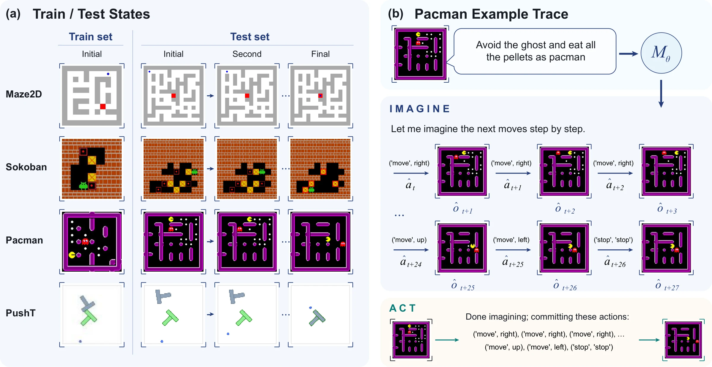

Follow one plan
Imagine the next frame after each action and keep planning from it.
Agima imagines before it acts. One omni model proposes an action, generates the frame it leads to, and keeps planning from that imagined frame before touching the real environment.
A single push in Sokoban can make a puzzle unsolvable. Avoiding such errors requires anticipating consequences before acting, which is especially hard when feedback is sparse and actions cannot be undone. We introduce Agima, a training framework that teaches an agent to imagine before it acts. A single omni model both proposes actions and generates images of where they lead, then treats these imagined frames as observations. It can follow a plan forward, test an alternative move, or compare competing plans, all before touching the real environment. Supervised fine-tuning teaches these forms of imagination, and reinforcement learning then optimizes the model's textual planning decisions using only binary task-success rewards.
Across four environments spanning Maze2D, Sokoban, Pacman, and PushT, Agima plans in harder or unseen configurations excluded from training. With supervised fine-tuning alone on two-box Sokoban, it solves 40% of four-box puzzles while seeing the real board only once every five moves; an action-only planner fine-tuned from the same backbone solves 2%. After RL, Agima solves more held-out Sokoban puzzles and adapts how it uses imagination: it drafts a second plan mainly when it foresees the first one failing, and branches more often at critical decisions.
Method
Each imagined frame becomes an observation for the next decision. Agima learns three ways to use them.

Imagine the next frame after each action and keep planning from it.
Try another action, imagine where it leads, and reject it if it fails.
Imagine complete candidate plans and execute the one that succeeds.
Setup
Four tasks with different dynamics. Agima trains on the easier setting and is tested on a harder one.

Results
Real board every five actions (K = 5). Compared with the same backbone trained without imagined frames.
Four-box Sokoban after training on two boxes (action-only: 2%)
Pacman over the action-only model
Same training episodes, different imagination traces. One real observation, then pure imagination (K = ∞).
Two-box Sokoban Deadlock with forward thinking
Pacman route-order traps (G8/F4) with forward thinking
Analysis
Replacing the imagined frames with blank or stale ones drops success to at most 1%. Ground-truth frames barely help in Sokoban, so its predictions are nearly as useful as reality there.
A single rollout eats the nearer food and is caught later. Comparing two imagined routes finds the one that survives.

With only a success reward on three-box puzzles, every imagination-based model improves, including on four-box puzzles. The action-only model does not.

After RL, Agima drafts a second plan in 26–31% of episodes instead of 79%, and almost only when the first one really fails.

Agima opens more branches per plan and places more of them where a single push would make the puzzle unsolvable.

Explorer
Full trajectories for every environment and K. A real frame arrives every K actions; the rest are imagined.
Citation
@article{agima2026,
title = {Learning to Plan with Agentic Imagination},
author = {Author names},
journal = {arXiv preprint},
year = {2026}
}